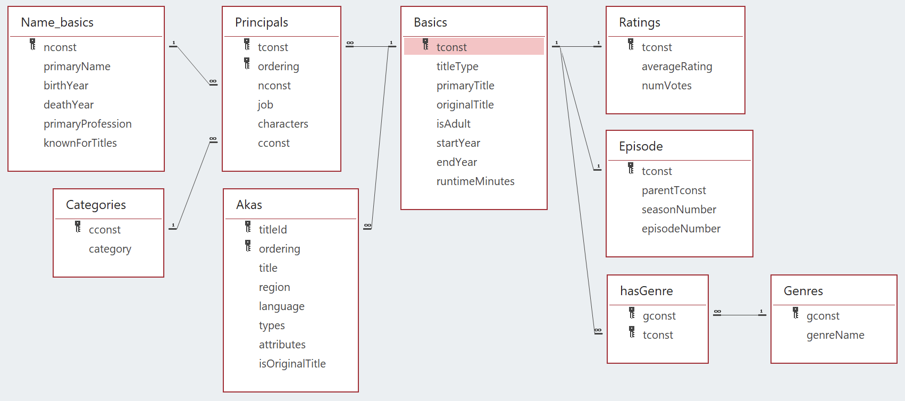
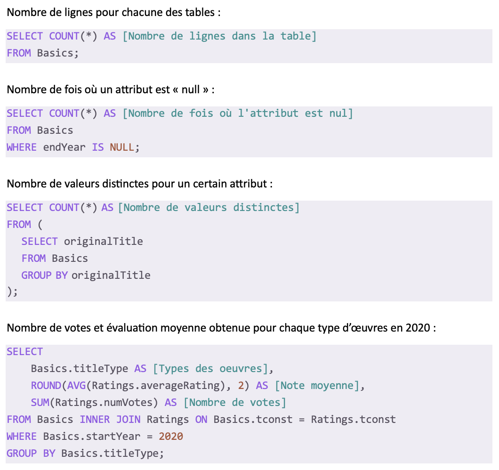
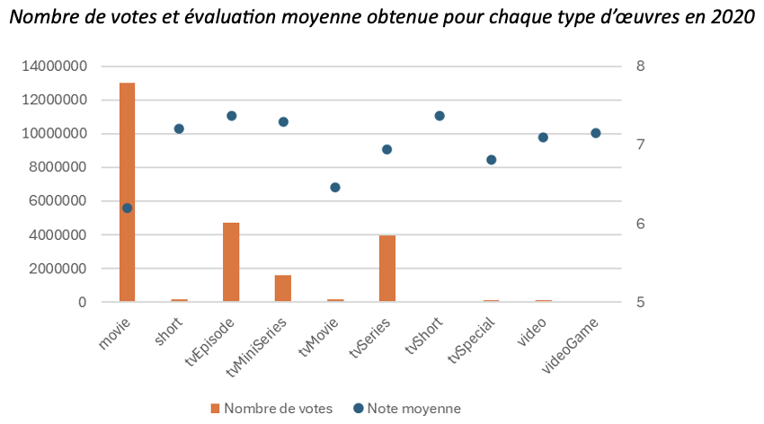

Cette capture d’écran montre le schéma relationnel de la base de données utilisé pour le projet. On observe une structure avec des tables principales (Basics, Ratings, Episode, etc.) et des tables de liaison (Principals, hasGenre). Les clés primaires et étrangères sont clairement identifiées, ce qui garantit l’intégrité référentielle.
Cette modélisation m’a permis de comprendre les relations entre les entités (films, personnes, genres, etc.) et de concevoir des requêtes SQL cohérentes.
Elle prouve que j’ai acquis la compétence AC 11.04, car j’ai su analyser et interpréter la structure des données pour la rendre exploitable. J’ai compris l’importance des clés et des relations pour extraire des informations fiables.
Cette image présente plusieurs requêtes SQL que j’ai rédigées pour analyser la base de données et répondre aux besoins du commanditaire. On y voit des instructions comme le comptage du nombre de lignes (COUNT()), la détection des valeurs nulles (IS NULL), le calcul de titres distincts, ou encore la moyenne des évaluations (AVG()) et le total des votes par type d’œuvre pour l’année 2020.
J’ai structuré chaque requête de façon claire, avec indentation logique, alias explicites, et une organisation qui facilite la relecture. Cela m’a permis d’extraire des indicateurs pertinents à partir de données volumineuses, tout en respectant les standards de présentation SQL.
Cette preuve démontre que j’ai acquis la compétence AC 11.02, grâce au respect des formalismes de notation dans la rédaction du code SQL (structure lisible, bonnes pratiques d’alignement, alias clairs). Elle montre aussi que j’ai acquis la compétence AC 11.03, car j’ai utilisé correctement la syntaxe du langage SQL (fonctions d’agrégation, conditions, filtrage) pour produire des résultats fiables et précis.
Ce graphique réalisé dans Excel montre la synthèse des résultats issus de la requête précédente. Il affiche, pour chaque type d’œuvre (movie, short, tvEpisode, etc.), le nombre total de votes (barres oranges) et la note moyenne (points bleus).
Il permet une lecture rapide et visuelle des tendances : les films (movie) obtiennent le plus de votes, mais les mini-séries (tvMiniSeries) ou les courts-métrages (short) ont souvent de meilleures notes moyennes.
Ce graphique prouve que j’ai acquis la compétence AC 11.01, car il répond à une demande spécifique du commanditaire : synthétiser des indicateurs dans un format visuel clair et exploitable.
Access / SQL
Dans cette SAÉ, je me suis retrouvé dans la posture d’un chargé d’analyse et de reporting. Mon rôle consistait à produire des requêtes et graphiques exploitables à partir d’une base de données relationnelle, en suivant un cahier des charges précis. J’ai dû faire face à des bases complexes, à des données volumineuses et à des jointures multiples, simulant une situation professionnelle réelle.
J’ai mobilisé les ressources tableur et reporting (R1.01) pour la mise en forme des graphiques ainsi que les bases de données relationnelles 1 (R1.02) pour la création des requêtes.
J’ai rédigé des requêtes SQL pour extraire des données pertinentes afin de répondre aux demandes du cahier des charges, conçu des indicateurs de performance, organisé leur restitution dans un fichier Excel et documenté mon code SQL via Access.
J’ai appris à interpréter un cahier des charges, à réaliser un reporting, à gérer les difficultés liées aux bases relationnelles (jointures, volumes, cohérence), et à adapter ma production aux besoins du commanditaire.
Compétences développées :
— AC 11.01 |Correctement interpréter et prendre en compte le besoin du commanditaire ou du client
J’ai su identifier les attentes liées à l’analyse des données et à leur visualisation, en livrant des résultats clairs et pertinents (graphiques, indicateurs).
— AC 11.02 |Respecter les formalismes de notation
J’ai structuré les requêtes SQL avec une présentation claire et lisible (alias, indentations, bonnes pratiques), afin de faciliter leur relecture.
— AC 11.03 |Connaître la syntaxe des langages et savoir l’utiliser
J’ai rédigé des requêtes SQL en respectant la syntaxe, en utilisant des jointures, des fonctions d’agrégation et des conditions, afin de montrer ma maîtrise de ce langage.
— AC 11.04 |Mesurer l’importance de maîtriser la structure des données à exploiter
J’ai analysé et utilisé le schéma relationnel pour comprendre comment les tables sont liées, ce qui m’a permis de produire des requêtes pertinentes et correctes.